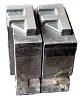

| A |
-
Abjad
-
Abjad is the technical term for the type of writing system used by Semitic
languages (Hebrew, Arabic, etc.), where there are glyphs for all the consonants
but the reader must be prepared to guess what vowel to add between two
consonants.
Both Hebrew and Arabic have optional vowel marks and are called "impure"
abjads. Ancient Phoenician had nothing but consonants and is a "pure" abjad.
See Also: alphabet, abugida,
syllabary and the relevant
Wikipedia article.
-
Abugida
-
An abugida is somewhere in between an alphabet and
a syllabary. The Indic writing systems are probably
the best known abugidas.
In most abugidas there are independant glyphs for the consonants, and each
consonant is implicitly followed by a default vowel sound. All vowels other
than the default will be marked by either diacritics or some other modification
to the base consonant.
An abugida differs from a syllabary in that there is a common theme to the
the images representing a syllable beginning with a given consonant (that
is, the glyph for the consonant), while in a syllabary each syllable is distinct
even if two start with a common consonant.
An abugida differs from an abjad in that vowels (other than the default)
must be marked in the abugida.
See Also: alphabet, abjad,
syllabary and the relevant
Wikipedia article.
-
 Advance
Width Advance
Width
-
The distance between the start of this glyph and the start of the next glyph.
Sometimes called the glyph's width. See also
Vertical Advance Width.
-
Alphabet
-
A writing system where there are glyphs for all phonemes -- consonants and
vowels alike -- and (in theory anyway) all phonemes in a word will be marked
by an appropriate glyph.
See Also: abjad, abugida,
syllabary and the relevant
Wikipedia article.
-
Apple Advanced Typography
-
Apple's extension to basic TrueType fonts. Includes contextual substitutions,
ligatures, kerning, etc. Also includes
distortable fonts.
-
Ascender
-
A stem on a lower case letter which extends above the x-height. "l" has an
ascender.
See also X-height,
Cap-height, Descender,
Overshoot, Baseline
-
Anchor Class
-
Used to specify mark-to-base and cursive GPOS subtables. See
overview.
-
Ascent
-
In traditional typography the ascent of a font was the distance from the
top of a block of type to the baseline.
Its precise meaning in modern typography seems to vary with different definers.
-
ATSUI
-
Apple's advanced typographical system. Also called Apple Advanced Typography.
|
| B |
-
Baseline
-
The baseline is the horizontal line
on which the (latin, greek, cyrillic) letters sit. The baseline will probably
be in a different place for different scripts. In Indic scripts most letters
descend below the baseline. In CJK scripts there is also a vertical baseline
usually in the middle of the glyph. The BASE and
bsln tables allow you to specify how the baselines of different scripts
should be aligned with respect to each other.
See also X-height,
Cap-height, Ascender,
Descender, Overshoot
-
Bézier curve or Bézier splines
-
Bézier curves are described in detail in the
Bézier section of the main manual.
-
Bidi
-
He looked thoughtful and grave- but the orders he gave
Were enough to bewilder the crew.
When he cried `Steer to starboard, but keep her head larboard!'
What on earth was the helmsman to do?
The Hunting of the Snark
Lewis Carroll
|
Bi-Directional text. That is a section of text which contains both left-to-right
and right-to-left scripts. English text quoting Arabic, for example. Things
get even more complex with nested quotations. The
Unicode standard contains an algorithm for laying
out Bidi text. See also:
Boustrophedon.
-
Black letter
-
Any of various type families based on medieval handwriting.
See also gothic.
-
BMP (Basic Multilingual Plane)
-
The first 65536 code points of Unicode. These contain
most of the ordinary characters in the modern world. See Also
-
SMP -- Supplementary Multilingual Plane (0x10000-0x1FFFF)
-
SIP -- Supplementary Ideographic Plane (0x20000-0x2FFFF)
-
SSP -- Supplementary Special-purpose Plane (0xE0000-0xEFFFF)
-
Bold
-
A common font style. The stems of the glyphs are wider
than in the normal font, giving the letters a darker impression. Bold is
one of the few LGC styles that translate readily to other
scripts.
-
Bopomofo
-
A (modern~1911) Chinese (Mandarin)
alphabet used to provide phonetic
transliteration of Han ideographs in dictionaries.
-
 Boustrophedon Boustrophedon
-
Writing "as the ox plows", that is alternating between left to right and
right to left writing directions. Early alphabets (Old Canaanite, and the
very early greek writings (and, surprisingly,
fuþark)) used this. Often the right to left
glyphs would be mirrors of the left to right ones. As far as I know, no modern
writing system uses this method (nor does OpenType have any support for it).
See Also Bidi.
|
| C |
-
Cap-height

-
The height of a capital letter above the baseline (a letter with a flat top
like "I" as opposed to one with a curved one like "O").
See also X-height, Ascender,
Descender, Overshoot,
Baseline
-
CFF
-
Compact Font Format most commonly used within
OpenType postscript fonts, but is a
valid font format even without a SFNT wrapper. This is
the native font format for fonts with PostScript Type2 charstrings.
-
Character
-
A character is a Platonic ideal reified into at least one
glyph. For example the letter "s" is a character which
is reified into several different glyphs: "S", "s", "s", long-s, etc.
Note that these glyphs can look fairly different from each other, however
although the glyph for an integral sign might be the same as the long-s glyph,
these are in fact different characters.
-
Character set
-
A character set is an unordered set of characters
-
CID
-
Character Identifier, a number. In some CJK
PostScript fonts the glyphs are not named but are
refered to by a CID number.
-
CID-keyed font
-
A PostScript font in which the glyphs are index
by CID and not by name.
-
CJK
-
Chinese, Japanese, Korean. These three languages require fonts with a huge
number of glyphs. All three share a writing system based on Chinese ideographs
(though they have undergone separate evolution in each country, indeed mainland
Chinese fonts are different from those used in Taiwan and Hong Kong).
Japanese and Korean also have phonetic syllabaries. The Japanese have two
syllabaries, Hiragana and katakana which have about 60 syllables. The Koreans
have one syllabary, hangul with tens of thousands of syllables.
-
CJKV
-
Chinese, Japanese, Korean, Vietnamese. These four languages require fonts
with a huge number of glyphs.
-
Condensed
-
A condensed font is one where the space between the stems of the glyphs,
and the distance between glyphs themselves has been reduced.
-
Conflicting hints
-
If a glyph contains two hints where the start or end point of one is within
the range of the other then these hints conflict. They may not be active
simultaneously.
|
| D |
-
Descender
-
A stem on a lower case letter which extends below the baseline. "p" has a
descender.
See also X-height,
Cap-height, Ascender,
Overshoot, Baseline
-
Descent
-
In traditional typography the descent of a font was the distance from the
bottom of a block of type to the baseline.
Its precise meaning in modern typography seems to vary with different definers.
-
Device Table
-
A concept in OpenType which allows you to enter spacing adjustments geared
to rasterization at particular pixel sizes. If a kerning value that works
most of the time leads to an ugly
juxtaposition of glyphs on a 12 pixel high font, then you can add a special
tweak to the spacing that only is applicable at 12 pixels (and another one
at 14 and 18, or whatever is needed). Similar functionality is needed for
anchored marks.
-
Didot point
-
The European point. 62 2/3
points per 23.566mm ( 2.66pt/mm or 67.55pt/inch ). There is also a "metric"
didiot point: .4mm.
-
Distortable font
-
See Multi-Master
|
| E |
-
em
-
A linear unit equal to the point size of the font. In a 10 point font, the
em will be 10 points. An em-space is white-space that is as wide as the point
size. An em-dash is a horizontal bar that is as wide as the point size.
An em-square is a square one em to each side. In traditional typography (when
each letter was cast in metal) the glyph had to be drawn within the em-square.
-
em unit
-
In a scalable font the "em" is subdivided into units. In a postscript font
there are usually 1000 units to the em. In a TrueType font there might be
512, 1024 or 2048 units to the em. In an Ikarus font there are 15,000 units.
FontForge uses these units as the basis of its coordinate system.
-
en
-
One half of an "em"
-
Encoding
-
An encoding is a mapping from a set of bytes onto a
character set. It is what determines
which byte sequence represents which character. The words "encoding" and
"character set" are often used synonymously. The specification for ASCII
specifies both a character set and an encoding. But CJK character sets often
have multiple encodings for the character set (and multiple character sets
for some encodings).
In more complicated cases it is possible to have multiple glyphs associated
with each character (as in arabic where most characters have at least 4 different
glyphs) and the client program must pick the appropriate glyph for the character
in the current context.
-
Eth -- Edh
-
The old germanic letter "ð" for the voiced (English) "th" sound (the
sound in "this" -- most English speakers aren't even aware that "th" in English
has two sounds associated with it, but it does, see also
Thorn)
-
Even-Odd Fill rule
-
To determine if a pixel should be
filled using this rule,
draw a line from the pixel to infinity (in any direction) then count the
number of times contours cross this line. If that number is odd then fill
the point, if it is even then do not fill the point. This method is used
for fonts by postscript rasterizers after level 2.0 of PostScript. See Also
Non-Zero Winding Number Fill.
-
Extended
-
An extended font is one where the space between the stems of the glyphs,
and the distance between glyphs themselves has been increased.
-
Extremum
-
A point on a curve where the curve attains its maximum or minimum value.
On a continuous curve this can happen at the endpoints (which is dull) or
where dx/dt=0 or dy/dt=0.
|
| F |
-
Features (OpenType)
-
When creating fonts for complex scripts (and even for less complex scripts)
various transformations (like ligatures) must be applied to the input glyphs
before they are ready for display. These transformations are identified as
font features and are tagged with (in OpenType) a 4 letter tag or (in Apple)
a 2 number identfier. The meanings of these features are predefined by MicroSoft
and Apple. FontForge allows you to tag each lookup with one or several features
when you create it (or later).
-
Feature File
-
This is a text syntax designed by Adobe to describe OpenType features. It
can be used to move feature and lookup information from one font to another.
-
Feature/Settings (Apple)
-
These are roughly equivalent to OpenType's
Features above, they are
defined
by Apple.
-
Font
-
A collection of glyphs, generally with at least one
glyph associated with each character in the font's
character set, often with an encoding.
A font contains much of the information needed to turn a sequence of bytes
into a set of pictures representing the characters specified by those bytes.
In traditional typesetting a font was a collection of little blocks of metal
each with a graven image of a letter on it. Traditionally there was a different
font for each point-size.
-
Font Family, or just Family
-
A collection of related fonts. Often including plain, italic
and bold styles.
-
FontForge
-
This.
-
FreeType
-
A library for rasterizing fonts. Used extensively in FontForge to understand
the behavior of truetype fonts and to do better rasterization than FontForge
could unaided.
-
Fractur
-
The old black letter writing style used in Germany up until world war II.
See also gothic.
-
Fuþark (Futhark)
-
The old germanic runic script
|
| G |
-
Ghost Hint
-
Sometimes it is important to indicate that a horizontal edge is indeed
horizontal. But the edge has no corresponding edge with which to make a normal
stem. In this case a special hint is used
with a width of -20 (or -21). A ghost hint must lie entirely within a glyph.
If it is at the top of a contour use a width of -20, if at the bottom use
-21. Ghost hints should also lie within BlueZones.
(The spec also mentions vertical ghost hints, but as there are no vertical
bluezones it is not clear how these should be used).
-
Glyph
-
A glyph is an image, often associated with one or several
characters. So the glyph used to draw "f" is associated
with the character f, while the glyph for the "fi" ligature is associated
with both f and i. In simple latin fonts the association is often one to
one (there is exactly one glyph for each character), while in more complex
fonts or scripts there may be several glyphs per character (In renaissance
printing the letter "s" had two glyphs associated with it, one, the long-s,
was used initially and medially, the other, the short-s, was used only at
the end of words). And in the ligatures one glyph is associated with two
or more characters.
Fonts are collections of glyphs with some form of mapping
from character to glyph.
-
Grid Fitting
-
Before TrueType glyphs are rasterized they go through a process called
grid fitting where a tiny program
(associated with each glyph) is run which moves the points on the glyph's
outlines around until they fit the pixel grid better.
-
Gothic
-
The German monks at the time of Gutenberg used a black-letter writing style,
and he copied their handwriting in his typefaces for printing. Italian type
designers (after printing spread south) sneered at the style, preferring
the type designs left by the Romans. As a term of contempt they used the
word gothic, the style of the goths who helped destroy the roman empire.
-
Graphite tables
-
Graphite is an extension
to TrueType which embeds several tables into a font containing rules for
contextual shaping, ligatures, reordering, split glyphs, bidirectionality,
stacking diacritics, complex positioning, etc.
This sounds rather like OpenType -- except that OpenType depends on the text
layout routines knowing a lot about the glyphs involved. This means that
OpenType fonts cannot be designed for a new language or script without shipping
a new version of the operating system. Whereas Graphite tables contain all
that hidden information.
Apple's Advanced Typography provides a better comparison, but Graphite tables
are supposed to be easier to build.
SIL International provides a free
Graphite
compiler .
-
Grotesque
-
See also sans-serif.
|
| H |
-
Han characters
-
The ideographic characters used in China,
Japan and
Korea (and, I believe, in various other
asian countries as well (Vietnam?)), all based on the writing style that
evolved in China.
-
Hangul
-
The Korean syllabary. The only syllabary
(that I'm aware of anway) based on an alphabet -- the letters of the alphabet
never appear alone, but only as groups of two or three making up a syllable.
-
Hanja
-
The Korean name for the Han characters
-
Hints
-
These are described in detail in the main
manual. They help the rasterizer to draw a glyph
well at small pointsizes.
-
Hint Masks
-
At any given point on a contour hints may
not conflict. However different
points in a glyph may need conflicting hints. So every now and then a contour
will change which hints are active. Each list of active hints is called a
hint mask.
-
Hiragana
-
One of the two Japanese syllabaries. Both Hiragana and
Katakana have the same sounds.
|
| I |
-
Ideographic character
-
A single character which represents a concept without spelling it out. Generally
used to mean Han (Chinese) characters.
-
Italic
-
A slanted style of a font, generally used for emphasis.
Italic differs from Oblique in that the transformation
from the plain to the slanted form involves more than just skewing the
letterforms. Generally the lower-case a changes to a, the serifs on
lower-case letters like i (i) change, and the font generally gains
a freer look to it.
|
| J |
-
Jamo
-
The letters of the Korean alphabet. These are almost never seen alone, generally
appearing in groups of three as part of a
Hangul syllable. The Jamo are divided
into three catagories (with considerable overlap between the first and third),
the choseong -- initial consonants, the jungseong -- medial vowels, and the
jongseong -- final consonants. A syllable is composed by placing a choseong
glyph in the upper left of an em-square, a jungseong in the upper right,
and optionally a jongseong in the lower portion of the square.
|
| K |
-
Kanji
-
The Japanese name for the Han characters.
-
Katakana
-
One of the two (modern) Japanese syllabaries. Both
Hiragana and Katakana have the same
sounds.
-
Kerning
-
When the
default spacing between two glyphs is inappropriate the font may include
extra information to indicate that when a given glyph (say "T") is followed
by another glyph (say "o") then the advance width of the "T" should be adjusted
by a certain amount to make for a more pleasing display.
In the days of metal type, metal actually had to be shaved off the slug of
type to provide a snugger fit. In the image on the side, the "F" on the left
has had some metal removed so that a lower case letter could snuggle closer
to it.
-
Kern pair
-
A pair of glyphs for which kerning information has
been specified.
-
Kerning by classes
-
The glyphs of the font are divided into classes of glyphs and there is a
large table which specifies kerning for every possible combination of classes.
Generally this will be smaller than the equivalent set of kerning pairs because
each class will usually contain several glyphs.
-
Knuth, Donald
-
A mathematician who got so fed up with bad typesetting back in the 1970&80s
that he created his own font design system and typographical layout program
called, respectively, MetaFont and TeX.
|
| L |
-
Left
side bearing
-
The horizontal distance from a glyph's origin to its leftmost extent. This
may be negative or positive.
-
Lemur
-
 A monotypic genus
of prosimian primates, now found only on Madagascar but formally (about 50
million years ago) members of this family were much more wide spread. A monotypic genus
of prosimian primates, now found only on Madagascar but formally (about 50
million years ago) members of this family were much more wide spread.
-
Ligature
-
A single glyph which is composed of two adjacent glyphs. A common example
in the latin script is the "fi" ligature
 which has a nicer
feel to it than the
sequence which has a nicer
feel to it than the
sequence . .
-
LGC
-
Latin, Greek, Cyrillic. These three alphabets have evolved side by side over
the last few thousand years. The letter forms are very similar (and some
letters are shared). Many concepts such as "lower case", "italic" are applicable
to these three alphabets and not to any others. (OK, Armenian also has lower
case letters).
|
| M |
-
Manyogana
-
An early Japanese script, ancestral to both hiragana
and katakana.
Manyogana used
kanji for their phontic sounds, and over
the years these kanji were simplified into hiragana and katahana.
-
Metal Type
-
Once upon a time, printing presses smashed plates full of slugs of metal
against paper.
-
Monospace
-
A font in which all glyphs have the same advance width. These are sometimes
called typewriter fonts.
-
Multi-layered fonts
-
(FontForge's own term) PostScript type3 fonts and SVG fonts allow for more
drawing possibilities than normal fonts. Normal fonts may only be filled
with a single color inherited from the graphics environment. These two fonts
may be filled with several different colors, stroked, include images, have
gradient fills, etc..
See Also
-
Multiple Master Font
-
A multiple master font is a PostScript font schema which defines an infinite
number of related fonts. Multiple master fonts can vary along several axes,
for example you might have a multiple master which defined both different
weights and different widths of a font family, it could be used to generate:
Thin, Normal, Semi-Bold, Bold, Condensed, Expanded, Bold-Condensed, etc.
Adobe is no longer developing this format. Apple has a format which acheives
the same effect but has not produced many examples. FontForge
supports both.
|
| N |
-
Namelist
-
A mapping from unicode code point to glyph name.
-
Non-Zero Winding Number Fill rule
-
To determine if a pixel should be filled
using this rule draw a line from here to infinity (in any direction)
and count the number of times contours cross this line. If the contour crosses
the line in a clockwise direction add 1, of the contour crosses in a counter
clockwise direction subtract one. If the result is non-zero then fill the
pixel. If it is zero leave it blank. This method is used for rasterizing
fonts by truetype and older (before version 2) postscript.
See Also Even-Odd Fill Rule
|
| O |
-
Ogham
-
The old Celtic inscription script.
-
OpenType
-
A type of font. It is an attempt to merge postscript and truetype fonts into
one specification.
An opentype font may contain either a truetype or a postscript font inside
it.
It contains many of the same data tables for information like encodings that
were present in truetype fonts.
Confusingly it is also used to mean the advanced typographic tables that
Adobe and MicroSoft (but not Apple) have added to TrueType. These include
things like contextual ligatures, contextual kerning, glyph substitution,
etc.
And MS Windows uses it to mean a font with a 'DSIG' (Digital Signature) table.
-
OpenType Tables
-
Each opentype font contains a collection of tables each of which contains
a certain kind of information. See here for
the tables used by FontForge.
-
Oblique
-
A slanted style of a font, generally used for emphasis.
Oblique differs from Italic in that the transformation
from the plain to the slanted form involves just skewing the letterforms.
-
Overshoot

-
In order for the curved shape of the "O" to appear to be the same height
as the flat top of the "I" it tends to "overshoot" the cap-height (or x-height),
or undershoot the baseline by about 3% of the cap-height (or x-height). For
a triangular shape (such as "A") the overshoot is even greater, perhaps 5%.
These guidelines are based on the way the eye works and the optical illusions
it generates and are taken from Peter Karow's Digital Formats for
Typefaces, p. 26).
The overshoot is also dependant on the point-size of a font, the larger the
point-size the smaller the overshoot should be. Generally modern fonts will
be used at multiple point-sizes, but in some font families there are multiple
faces for the different point-sizes, and in such a case the overshoot will
probably vary from face to face.
See also X-height,
Cap-height, Ascender,
Descender, Baseline
|
| P |
-
PANOSE
-
A system for describing fonts. See HP's PANOSE
Classification Metrics Guide, MicroSoft's
PANOSE
structure (Windows) and Robert Stevahn's PANOSE:
An Ideal Typeface Matching System for the Web. There is also an extension called
PANOSE 2.0 and an online
discussion.
FontForge only knows about the classification scheme for Latin fonts. Other
schemes exist for other scripts, such as Classifying
Arabic Fonts Based on Design Characteristics: PANOSE-APANOSE.
-
PfaEdit
-
This was the early name for FontForge. The original conception was that it
would only edit type1 ASCII fonts (hence the name), it quickly metamorphosed
beyond that point, but it took me three years to rename it.
-
Phantom points
-
In a truetype font there are a few points added to each glyph which are not
specified by the contours that make up the glyph. These are called phantom
points. One of these points represents the left side bearing, and the other
the advance width of the glyph. Truetype instructions (hints) are allowed
to move these points around just as any other points may be moved -- thus
changing the left-side-bearing or the advance width. Early versions of TrueType
supplied just these two phantoms, more
recent versions
also supply a phantom for the top sidebearing and a phantom for the vertical
advance width.
-
Pica
-
A unit of length defined (in the US at least) to be 35/83cm (or approximately
1/6th of an inch). This was used for measuring the length of lines of text
(as "30 picas and 4 points long"), but not for measuring font heights.
In Renaissance typography, before there were points, sizes of type had
names, and "pica" was used in this context.
As: "Great Canon", "Double Pica", "Great Primer", "English", "Pica", "Primer",
"Small Pica", "Brevier", "Nonpareil" and "Pearl" (each name representing
a progressively smaller size of type). and
See Caslon's type specimen
sheet on Wikipedia.
-
Pica point
-
The Anglo-American point. With 72.27 points per inch
( 2.85pt /mm ).
-
Point
-
A point is a unit of measurement. There were three (at least) different
definitions for "point" in common usage before the advent of computers. The
one in use in the Anglo-Saxon printing world was the "pica point" with 72.27
points per inch ( 2.85pt /mm ), while the one used in continental Europe
was the didot point with 62 2/3 points per 23.566mm
( 2.66pt/mm or 67.54pt/inch ) and the French sometimes used the Mediaan point
(72.78 points per inch, 2.86pt/mm).
The didiot and pica points were so arranged that text at a given point-size
would have approximately the same cap-height in
both systems, the didot point would have extra white-space above the capitals
to contain the accents present in most non-English Latin based scripts.
This has the interesting side effect that a font designed for European usage
should have a smaller proportion of the vertical em given over to the text
body. I believe that computer fonts tend to ignore this, so presumably european
printers now set with more leading.
As far as I can tell, computers tend to work in approximations to pica points
(but this may be because I am in the US), PostScript uses a unit of 1/72nd
of an inch.
Originally fonts were not described by point size, but by
name. It was not until the 1730s that Pierre
Fournier that created the point system for specifying font heights. This
was later improved upon by François Didiot (whence the name of the
point). In 1878 the Chicago Type Foundry first used a point system in the
US. In 1886 the US point was standardized -- the pica was defined to be 35/83cm,
and the pica point defined to be 1/12th of that.
-
Point Size
-
In traditional typography a 10pt font was one where the block of metal for
each glyph was 10 points high. The point size of a font is the unleaded baseline
to baseline distance.
-
Point of inflection
-
A point on a curve where it changes from being concave downwards to concave
upwards (or vice versa). Or in mathematical terms (for continuous curves)
where d2 y/dx2=0 or infinity.
Cubic splines may contain inflection points, quadratic splines may not.
-
PostScript
-
PostScript is a page-layout language used by many printers. The language
contains the specifications of several different font formats. The main
(FontForge) manual has a section describing how
PostScript differs from TrueType.
-
Type 1 -- This is the old standard for PostScript fonts. Such a font generally
has the extension .pfb (or .pfa). A type 1 font is limited to a one byte
encoding (ie. only 256 glyphs may be encoded).
-
Type 2/CFF -- This is the format used within OpenType
fonts. It is almost the same as Type 1, but has a few extensions and a more
compact format. It is usually inside a CFF wrapper, which is usually inside
an OpenType font. The CFF font format again only allows a 1 byte encoding,
but the OpenType wrapper extends this to provide more complex encoding types.
-
Type 3 -- This format allows full postscript within the font, but it means
that no hints are allowed, so these fonts will not look
as nice at small point-sizes. Also most (screen) rasterizers are incapable
of dealing with them. A type 3 font is limited to a one byte encoding (ie.
only 256 glyphs may be encoded).
-
Type 0 -- This format is used for collecting many sub-fonts (of Type 1, 2
or 3) into one big font with a multi-byte encoding, and was used for CJK
or Unicode fonts.
-
Type 42 -- A TrueType font wrapped up in PostScript.
Sort of the opposite from OpenType.
-
CID -- This format is used for CJK fonts with large numbers of glyphs. The
glyphs themselves are specified either as type1 or type2 glyph format. The
CID font itself has no encoding, just a mapping from CID (a number) to glyph.
An set of external CMAP files are used to provide appropriate encodings as
needed.
|
| Q |
-
-
|
| R |
-
Reference
-
A reference is a way of storing the
outlines of one glyph in another (for example in accented glyphs). Sometimes
called a "componant".
-
Right
side bearing
-
The horizontal distance from a glyph's rightmost extent to the glyph's advance
width. This may be positive or negative.
|
| S |
-
Sans Serif
-
See the section on serifs.
-
Script
-
A script is a character set and associated
rules for putting characters together. Latin, arabic, katakana and hanja
are all scripts.
-
Serif
latin
greek
cyrillic |
 |
 |
| a serif |
sans serif |
| hebrew |
 |
 |
| bet serif |
sans serif |
-
Back two thousand years ago when the Romans were carving their letters on
stone monuments, they discovered that they could reduce the chance of the
stone cracking by adding fine lines at the terminations of the main stems
of a glyph.
These fine lines were called serifs, and came to have an esthetic appeal
of their own. Early type designers added them to their fonts for esthetic
rather than functional reasons.
At the end of the nineteenth and beginning of the twentieth centuries,
type-designers started designing fonts without serifs. These were initially
called grotesques because their form appeared so strange, they are now generally
called sans-serif.
Other writing systems (Hebrew for one) have their own serifs. Hebrew serifs
are rather different from latin (cyrillic, greek) serifs and I don't know
their history. Hebrew serifs only occur at the top of a glyph
I would welcome examples from other scripts of serifed and sans-serifed glyphs.
-
SFD
-
SplineFont DataBase. These are FontForge's own personal font representation.
The files are ASCII and vaguely readable, the format is described
here. As of 14 May 2008 the format has been
registered with IANA for a MIME type:
application/vnd.font-fontforge-sfd.
Other people use sfd too. (Unfortunately)
-
Tops-10, on the Digital PDP-10 used sfd to mean "Sub File Directory". Tops-10
made a distinction between top-level (home) directories, called "user file
directories", and sub-directories.
-
TeX uses it to mean "Sub Font Definition" where a TeX sfd file contains
information on how to break a big CJK or Unicode font up into small sub-fonts,
each with a 1 byte encoding which TeX (or older versions of TeX) needed.
-
Others...
-
SFNT
-
The name for the generic font format which contains TrueType, OpenType, Apple's
bitmap only, X11's bitmap only, obsolete 'typ1' fonts and Adobe's SING fonts
(and no doubt others). The SFNT format describes how font tables should be
laid out within a file. Each of the above formats follow this general idea
but include more specific requirements (such as what tables are needed, and
the format of each table).
-
SIP
-
Supplementary Ideographic Plane (0x20000-0x2FFFF) of unicode. Used for rare
Han characters (most are no longer in common use) See Also
-
BMP -- Basic Multilingual Plane (0x00000-0x0FFFF)
-
SMP -- Supplementary Multilingual Plane (0x10000-0x1FFFF)
-
SSP -- Supplementary Special-purpose Plane (0xE0000-0xEFFFF)
-
SMP
-
Supplementary Multilingual Plane (0x10000-0x1FFFF) of unicode. Used for ancient
and artificial alphabets and syllabaries -- like Linear B, Gothic, and Shavian.
See Also
-
BMP -- Basic Multilingual Plane (0x00000-0x0FFFF)
-
SIP -- Supplementary Ideographic Plane (0x20000-0x2FFFF)
-
SSP -- Supplementary Special-purpose Plane (0xE0000-0xEFFFF)
-
Spline
-
A curved line segment. See the section in the
manual on splines. The splines used in FontForge are all second or third
order Bézier splines (quadratic or cubic), and
Raph Levien's clothoid splines.
-
SSP
-
Supplementary Special-purpose Plane (0xE0000-0xEFFFF) of unicode. Not used
for much of anything. See Also
-
BMP -- Basic Multilingual Plane (0x00000-0x0FFFF)
-
SMP -- Supplementary Multilingual Plane (0x10000-0x1FFFF)
-
SIP -- Supplementary Ideographic Plane (0x20000-0x2FFFF)
-
State machine
-
A state machine is like a very simple little program, they are used on the
mac for performing contextual substitutions and kerning. The
state machine dialog is reachable
from Element->Font
Info->Lookups
The "state machine" consists of a table of states, each state in turn consists
of a series of potential transitions (to the same or different states) depending
on the input. In state machines within fonts, the machine starts out in a
special state called the start state, and reads the glyph stream of the text.
Each individual glyph will cause a state transition to occur. As these
transitions occur the machine may also specify changes to the glyph stream
(conditional substitutions or kerning).
Example
-
Strike
-
A particular instance of a font. Most commonly a bitmap strike is a particular
pixelsize of a font.
-
Style
-
There are various conventional variants of a font. In probably any writing
system the thickness of the stems of the glyphs may be varied, this is called
the weight of a font. Common weights are normal and
bold.
In LGC alphabets an italic (or
oblique) style has arisen and is used for emphasis.
Fonts are often compressed into a condensed style,
or expanded out into an extended style.
Various other styles are in occasional use: underline, overstrike, outline,
shadow.
-
SVG
-
Scalable Vector Graphics. An XML format used for drawing vector images. It
includes a font format.
-
Syllabary
-
A syllabary is a phonetic writing system like an alphabet. Unlike an alphabet
the sound-unit which is written is a syllable rather than a phoneme. In Japanese
KataKana the sound "ka" is represented by one glyph. Syllabaries tend to
be bigger than alphabets (Japanese KataKana requires about 60 different
characters, while the Korean Hangul requires tens of thousands).
See Also: abjad, abugida,
alphabet and the relevant
Wikipedia article.
|
| T |
-
TeX
-
A typesetting package.
-
Thorn
-
The germanic letter "þ" used for the unvoiced (English) "th" sound
(as in the word "thorn"), I believe this is approximately the same sound
value as Greek Theta. Currently a corrupt version of this glyph survives
as "ye" for "the". See also Eth.
-
True Type
-
A type of font invented by Apple and shared with MicroSoft. It specifies
outlines with second degree (quadratic) Bézier
curves, contains innovative hinting controls, and an expandable series of
tables for containing whatever additional information is deemed important
to the font.
Apple and Adobe/MicroSoft have expanded these tables in different ways to
include for advanced typographic features needed for non-latin scripts (or
for complex latin scripts). See Apple Advanced
Typography and OpenType.
-
TrueType Tables
-
Each truetype font contains a collection of tables each of which contains
a certain kind of information. See here for
the tables used by FontForge.
-
Type 1
-
A type of PostScript font which see.
-
Type 2
-
A type of PostScript font, used within
OpenType font wrappers.
-
Type 3
-
A very general type of PostScript font, which see.
-
Type 0
-
A type of PostScript font, which see.
-
Type High
-
In the days of metal type this was the height of the piece of metal -- the
distance from the printing surface to the platform on which it rested.
-
Typewriter
-
See Monospace.
|
| U |
-
Unicode
-
A character set/encoding which tries to contain all the characters currently
used in the world, and many historical ones as well. See the
Unicode consortium.
-
BMP -- Basic Multilingual Plane (0x00000-0x0FFFF)
-
SMP -- Supplementary Multilingual Plane (0x10000-0x1FFFF)
-
SIP -- Supplementary Ideographic Plane (0x20000-0x2FFFF)
-
SSP -- Supplementary Special-purpose Plane
(0xE0000-0xEFFFF)
More info.
-
Undershoot
-
See the explanation at Overshoot.
-
UniqueID
-
This is a field in a PostScript font, it was formerly used as a mechanism
for identifying fonts uniquely, then Adobe decided it was not sufficient
and created the XUID (extended Unique ID) field. Adobe has now decided that
both are unneeded.
There is a very similar field in the TrueType 'name' table.
-
UseMyMetrics
-
This is a truetype concept which forces the width of an composite glyph (for
example an accented letter) to be the same as the width of one of its components
(for example the base letter being accented).
|
| V |
-
Vertical Advance Width
-
CJK text is often written vertically (and sometimes horizontally), so each
CJK glyph has a vertical advance as well as a
horizontal advance.
|
| W |
-
Weight
-
The weight of a font is how thick (dark) the stems of the glyphs are.
Traditionally weight is named, but recently numbers have been applied to
weights.
| Thin |
100 |
| Extra-Light |
200 |
| Light |
300 |
| Normal |
400 |
| Medium |
500 |
| Demi-Bold |
600 |
| Bold |
700 |
| Heavy |
800 |
| Black |
900 |
| Nord |
|
| Ultra |
|
-
Width
-
This is a slightly ambiguous term and is sometimes used to mean the
advance width (the distance from the start of
this glyph to the start of the next glyph), and sometimes used to mean the
distance from the left side bearing to the right side bearing.
|
| X |
-
X-height

-
The height of a lower case letter above the base line (with a flat top like
"x" or "z" or "v" as opposed to one with a curved top like "o" or one with
an ascender like "l") .
See also Cap-height,
Ascender, Descender,
Overshoot, Baseline
-
XUID
-
Extended Unique ID in a PostScript font. Now somewhat obsolete. See the
explanation at Unique ID.
|
| Y |
-
-
|
| Z |
-
Zapf, Hermann
-
Outstanding modern font designer.
|